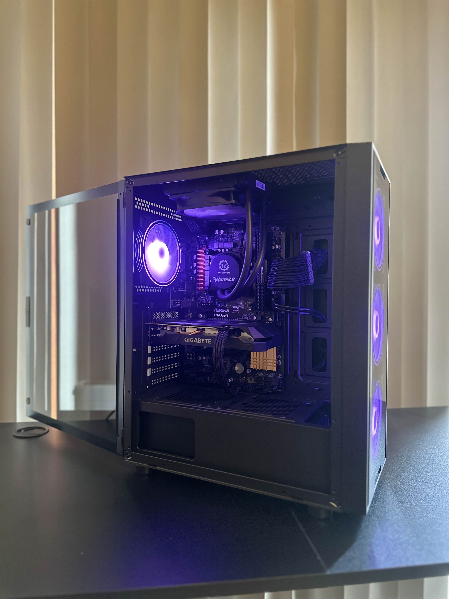
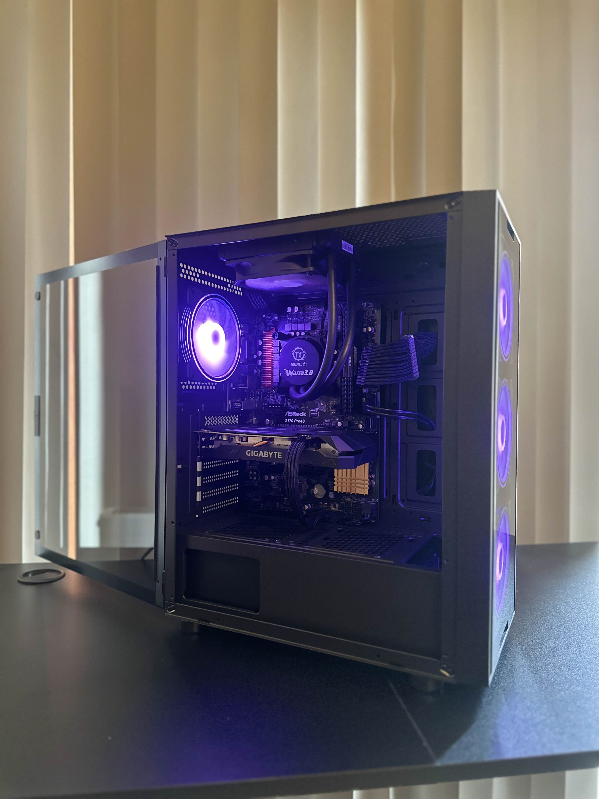
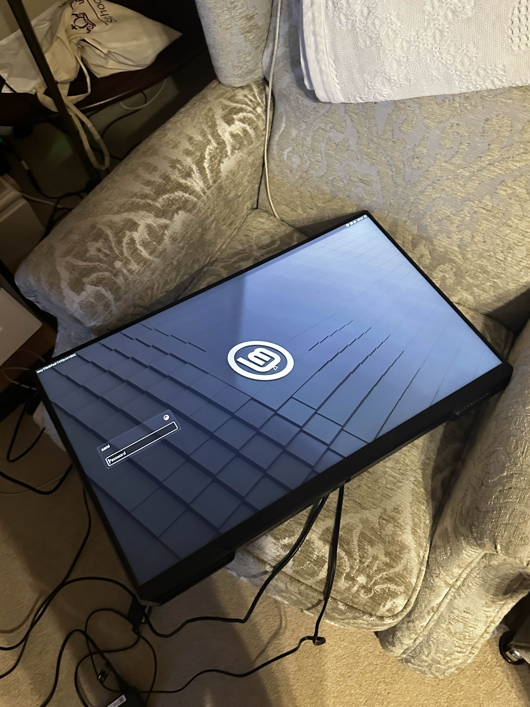
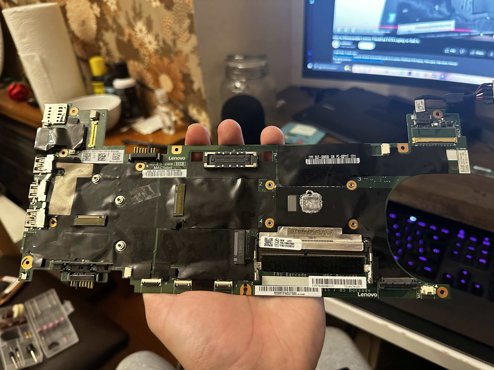
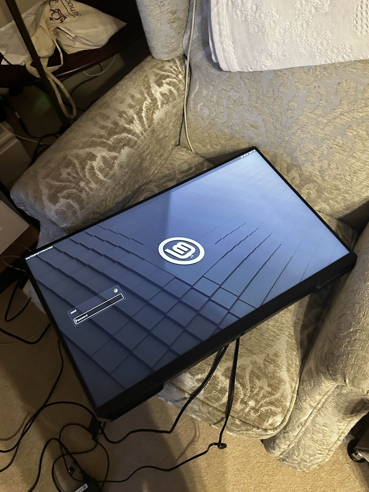
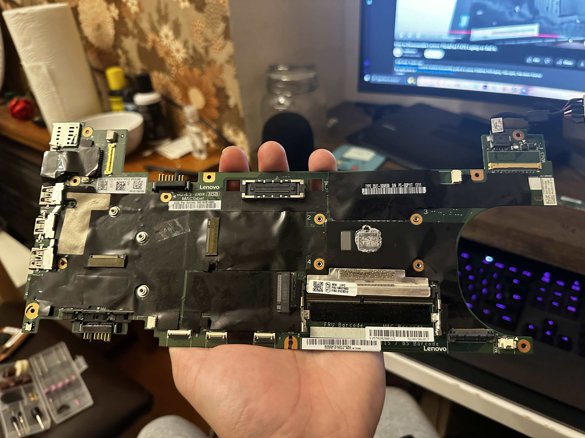

Python Face Recognition
Recently whilst scrolling through scoial media I have seen a lot of other computer science studnets make their own face recognition UI's with meme images. One of my friends suggested it would be funny to use one of his faces emotions to show different reactions. Mostly inspired by how other people put their unique emojis and features for their UI's I decided to make one as I thought it would be pretty cool and funny to show to my friend. I did use a lot of tutorials to help me out as it was my first time Tkinter and some of the libraries used for face recognition. Overall, I was disappointed in how the UI turned out but I was happy that at the end I was able to make everything worked. The emoji reactions above are obviously not my friend as he did not want his face up.

Python Music Bot
Although we can use other bots to play music and have it type out custom messages. My friends and I wanted one which felt apart of the server we had so it would have inside jokes only we would know etc. I already had a music bot that I had failed to make back in 2020 during covid, so I had some experience before hand but I had no clue on how to make it so the bot would recognise our messages and type back. I made this closer to exam dates where me and my friends would revise and listen music together, I didn't have time to actually make the bot scan through our server, instead it read a txt file and would randomly just type out some of messages you gave it. It is still a work in progress and I do intend to update it soon as it is in a server full of 100 members along with a private server.
 


PC Restorations
PC building is one of my favourite pass time hobbies which might seem a bit crazy. Some people love to game, which don't get me working I still enjoy doing, however, building and restoring old computers is something that I see very satisfying to do especially when you have the vision for the computer and are able to execute it flawlessly. Over the past year, I have restored a couple of my friends computers and last year even my own. Only recently I have started to document my builds this year I managed to restore a clients PC to which I did have one issue with the motherboard but luckily managed to sort it out as soon as I could to which he was really happy about it. In the pictures above you can see the restoration of my client with a budget build.

Manga Nato Web Scraper
Reading books and manga has been a huge part of my childhood as I always love to read new and exciting stuff, recently one of my friends doesn't find enjoyment in endlessly scrolling through websites to find something that he doesn't like and some what the same for me too. That's why I decided to create this web scraper that we use almost every week and list out any interesting manga titles or even first chapters and begin reading. So far it's motivated my friend to spark his passion for reading again. Image above taken recently to still show that it works and had to fix some issues but now is working properly.

 




Homemade Steam Deck
I have taken a huge inspiration from my favourite YouTuber, Marcin Plaza, to build my own custom handheld gaming device inspired by the Switch 2 in order to emulate older nintendo games and playstaion 2 games as that was a massive part of my childhood. I suffered massive challenges during my process which really goes to show how insanely impressive it is for Marcin Plaza. I did manage to get the device to work but due to a lack of a 3D printer and funding I had to scrap the project and put everything back into a working Lenovo Thinkpad to which I use now to host minecraft servers with my friends and sometimes store data.
CSV Parser for Traffic Data
Simple CSV parser for traffic data. I had made this last year just for some uni project I had. I have some ideas on how to nicely format the data so it looks much nicer to read, so soon I will update it whenever I get the chance. This is still a work in progress in order to learn new stuff and parse other types of data. Image above just a placeholder as I do not have any images to showscase but code can be found on the github page.